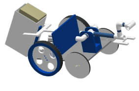

OUR ROBOT
LUNA
Base
The base consists of a drivetrain with three toothed wheels on each side, with the smaller center wheel driven by a motor to spin the larger wheels in contact with the floor. This configuration was intended to maximize traction and provide greater control, especially for navigating challenging terrain like the lunar surface. However, during testing, the toothed gaps in the wheels caused intermittent loss of surface contact, which reduced traction and sometimes led to the robot flipping on uneven ground. Additionally, the drivetrain's speed was slower than desired, although it performed well in terms of precise navigation across the gamefield.
Arm
The arm is a retractable mechanism composed of a metal Igus rail and a lazy Susan at its base, designed for versatile movement and reach. It uses a pulley system to extend the rail, allowing the arm to reach greater heights. The lazy Susan provides smooth, 360-degree rotation, enhancing the arm’s flexibility. However, during testing, the team found that the extended arm shifted the robot’s center of mass, causing instability and occasional flipping on the lunar surface. Additionally, the arm's long reach was unnecessary, as the game pieces were lower than initially estimated. The team also calculated that the arm could lift a maximum of 0.6725 lb without compromising its structural integrity.
Claw
The claw is a manipulator designed to grip and handle game pieces, using a servo motor to open and close around objects like tennis balls. The large gaps between the claw's fingers allowed for easy gripping of these pieces. While it performed well in most tasks, the claw struggled with the precise activation of the radio antenna repair task, as it couldn’t accurately push down on the trigger. To improve its functionality, the team redesigned the gripper portion using wood and added an overhanging knob to help the claw more reliably press the trigger. This modification allowed the claw to consistently aim and press the trigger, while still effectively grabbing and moving game pieces, although it remained somewhat difficult for the drivers to aim accurately.
Dropper
The dropper is a mechanism designed to securely hold and drop habitat modules onto the scoring zone. The initial prototype was built from laser-cut masonite boards, assembled with tape and metal brackets, and featured an open front for easy placement of the habitat modules. It used a tilt mechanism to release three stacked modules during transport. While the dropper was able to carry and release the stacked modules into the scoring zone, its performance was inconsistent during testing, as the modules often fell off the stack due to the uneven lunar surface. In response, the team iterated on the design by using a cardboard box with rubber bands to secure the modules and adding a guide and servo for a latch mechanism to more reliably release the modules in the correct position. Further stability improvements are planned for future iterations.